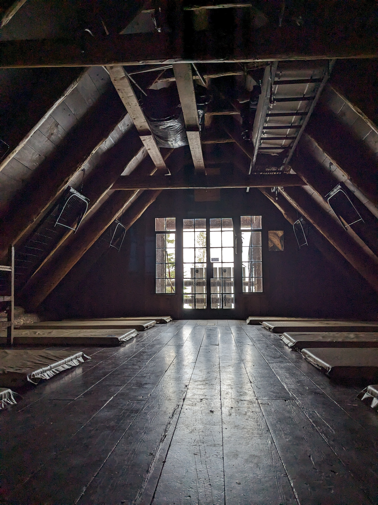
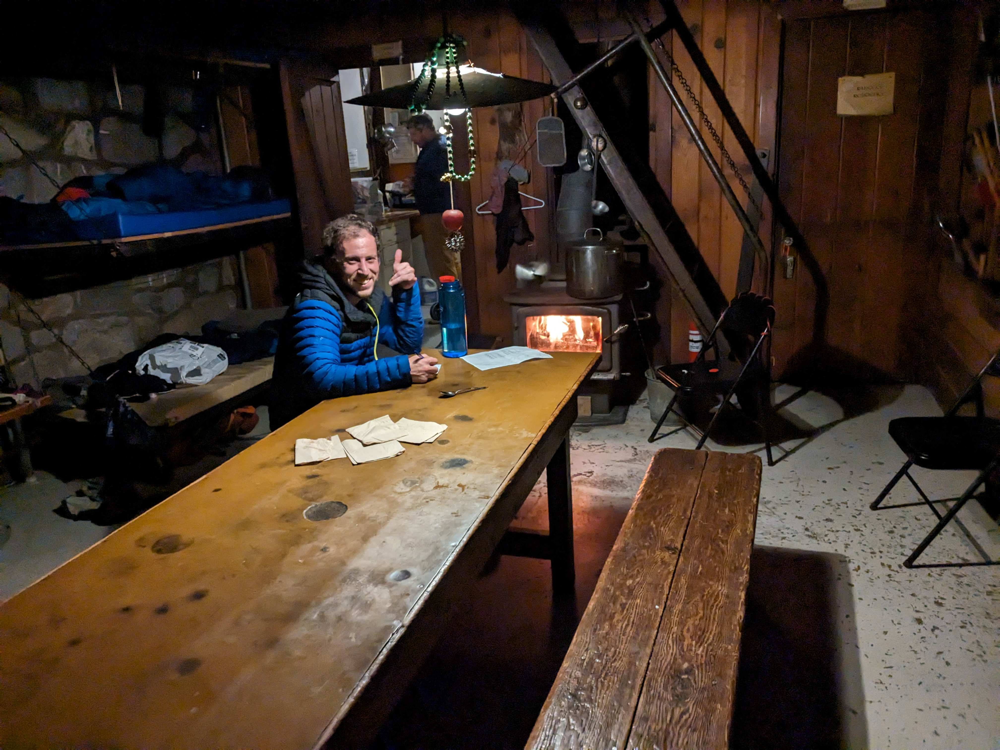
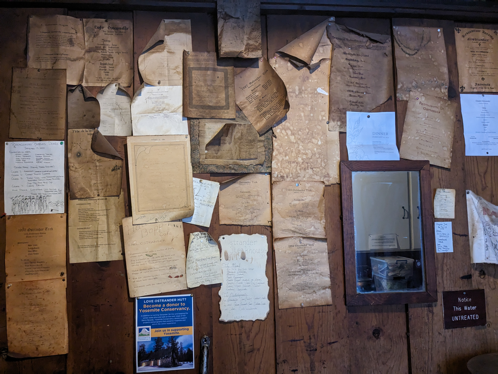
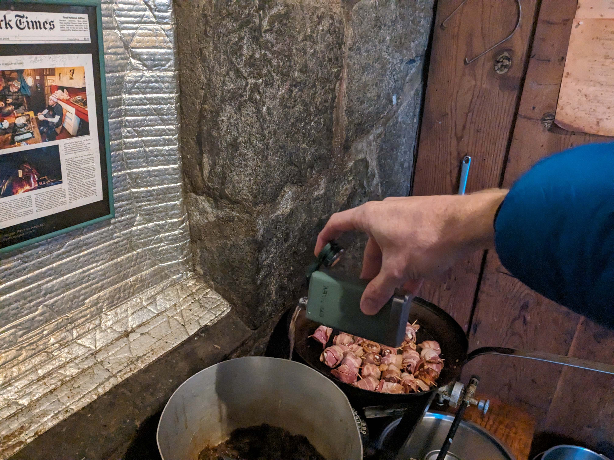
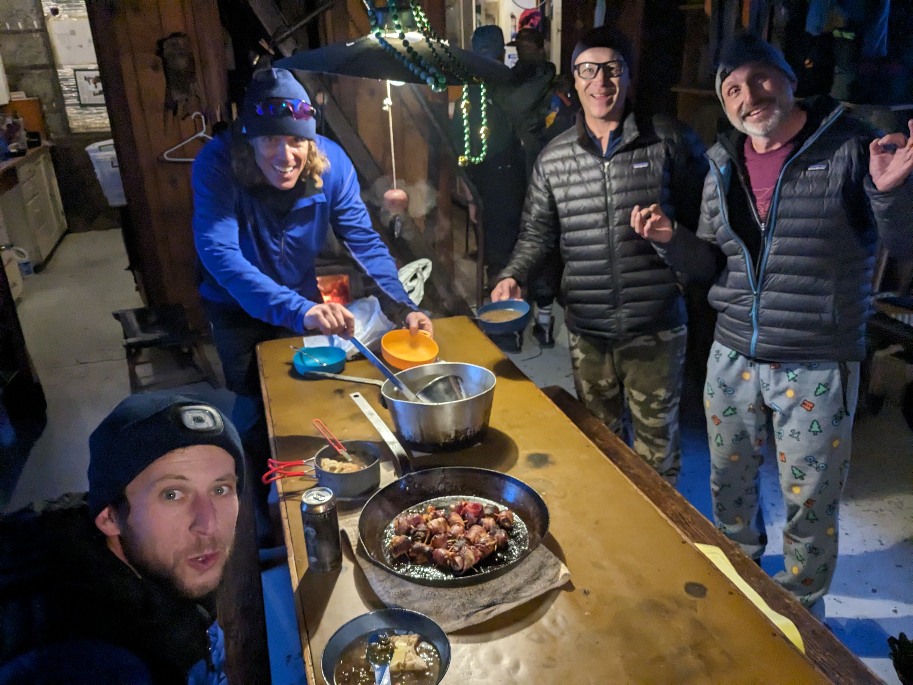
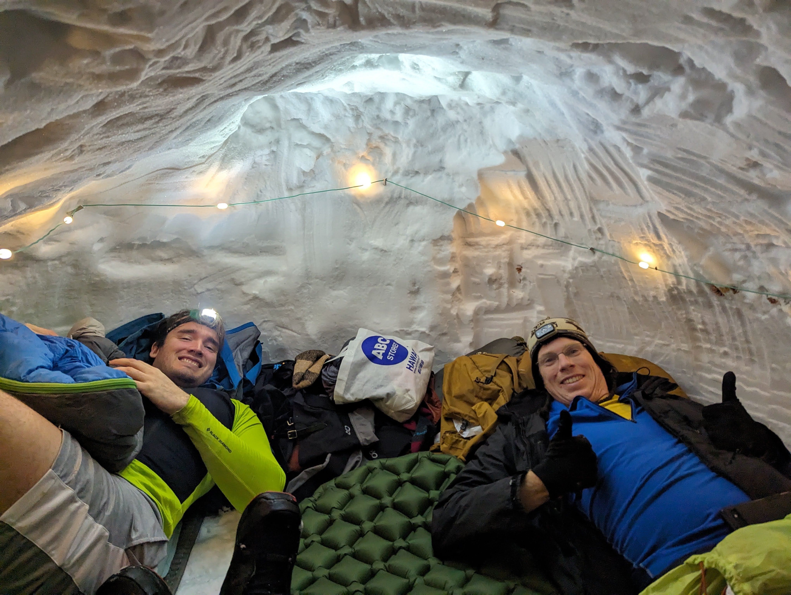
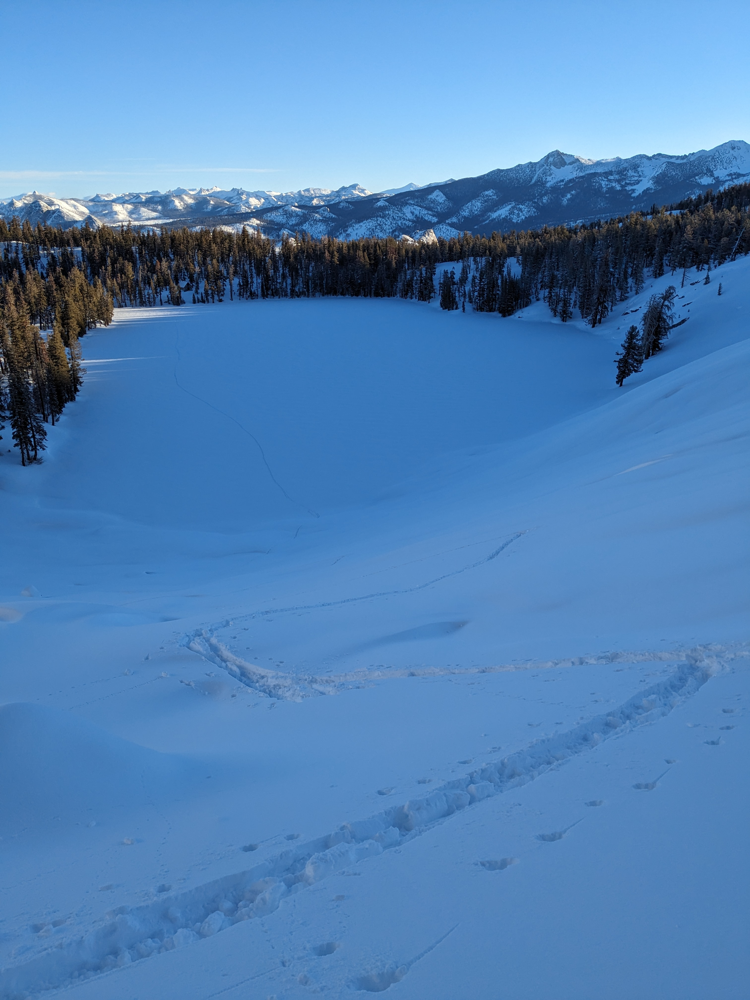
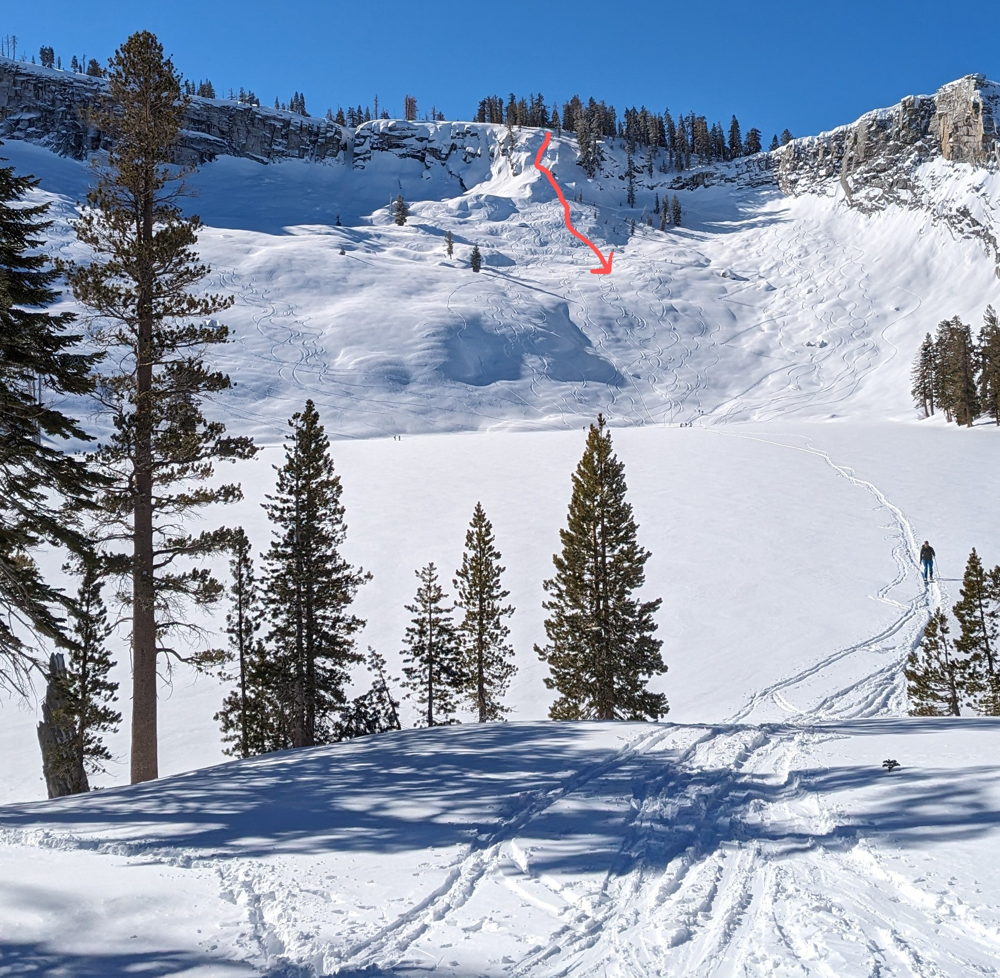

The Ostrander Ski Hut is a historic ski hut located within the park boundary of Yosemite. It has also grown exceptionally popular in recent years, and it can be quite difficult to get a reservation. It is an exceedingly robust rock structure, with large banquet table ringed by 3 layers of bunks downstairs and a loft upstairs. A wood stove (alongside prodigious amounts of body heat) keep the hut warm. A mostly functional kitchen offers a place to cook meals and an array of aging paper menus tacked to the kitchen wall brag of elaborate and impractical meals that skiers have cooked in the past. A big part of the charm of Ostrander is that it is tucked far into the backcountry, and no wayward day tripper would ever end up there. Everyone who is there has put in considerable effort getting there.



Jacob was able to secure a reservation for a Friday, but not the Saturday. One night stays are fairly uncommon, because it takes nearly a full day to get to the hut. Truly experiencing the hut requires a two night stay, or even longer if possible. A one night out and back is a long slog for not much time enjoying the ambiance of the area. Nevertheless, the rangers assurred us that given an impending storm that was to roll in on Saturday there would be enough cancellations that we should be able to add on a night once we got up there.
Nick was interested in coming, but he needed to work on Friday, and so he would work spend the night in his van in the parking lot and get an early start to meet us at the hut Saturday morning.
I prepared an elaborate meal plan, inspired by the stories of the menu wall (and incorrectly assuming that extravagant meals were fairly typical). The first dinner was to be bacon-wrapped, goat cheese-stuffed dates with a French onion soup and chocolate cherry cake for dessert. The beer pairing was Old Rasputin.


Jacob and I labored up the trail to the hut, with extremely heavy packs. Dinner was incredible, though, and worth every ounce. We snagged a few ground floor bunks and got a good night's sleep. Nick had hauled ass up the trail, arriving at the hut shortly after we had woken up and started to cook our breakfast, apricot Scottish pan scones. Nick caught a quick nap while we cooked, and then we set out on a short tour, up the eastern end of Horse Ridge, getting some steep descents on good snow.
We checked in with the hut keeper about our "walk-up" reservation for that evening and he informed us that the Badger Pass rangers had given our hut spots to an entirely different group of "walk-up" travelers. We would not have beds that night, unless there was a no-show. We knew that this was a possibility, but the rangers had been so confident that it wouldn't be a problem that we had started to not worry about it. I still don't understand the mechanisms by which someone who rolled up that morning were given priority over people who were already at the hut and had expressed interest in cancelled bookings. It was frustrating to say the least.
We had a choice to make: bail back to our cars, descending into deteriorating weather with an oncoming storm, or plan to ride it out somewhere other than the hut. I had never slept in a snow cave at that point, despite a few attempts (once in Boy Scouts when I had become dangerously altitude sick while digging, and once in grad school when our lofty dreams of making a giant igloo were cut short by needing to attend to some unprepared freshmen who needed assistance). I was excited to embrace the need of the moment and commit to the snow cave. We spent the rest of the afternoon preparing the snow cave, as it began to snow. It was a pretty decent set up by the time we were finished.

We spent the early evening socializing in the hut and counting numbers as travelers trickled in. The ranger informed us that enough parties had departed Badger Pass that all beds were spoken for, but it was possible that some parties would turn back in the weather. The final party arrived around 8pm, in a full-on blizzard. Amazingly, they had a 12 year old in their party with them. As the hut occupants started going to bed, we made our way out into the storm and to the snow cave. I slept horribly, discovering a slow leak in my sleeping pad and needing to reinflate it every hour or so when I started to get too cold.
The morning was glorious, however. 8 inches of fresh powder had fallen and the storm had blown over, leaving clear skies. Nick and I stiffly got up, dug out of the cave, and got our gear on. The slopes of Horse Ridge across the lake were an absolute party, with abundant fresh lines to be had and constant whoops of excitement. We did several laps, getting a bit higher on each lap before finally gaining the cliffband up to the plateau of the ridge on the last one. We got in some incredible steep powder skiing on that last lap.


Back at the hut, we warmed and dried ourselves, got some food, collapsed the cave, and then departed for the cars. We took an ill-advised shortcut intended to skip the extra gain of the Horizon Ridge trail, while avoiding the extra distance of the Bridalveil Creek option. Instead, we ended up on thin coverage over fallen trees, slogging our way through a wet bushwhack. Eventually, we broke out onto the Glacier Point road. It was still a slog in the rapidly warming weather, but at least it was a road slog.